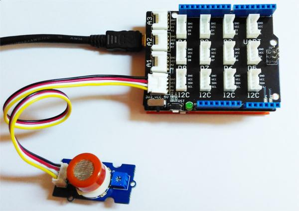

The Grove - Gas Sensor(MQ3) module is useful for gas leakage detection (in home and industry). It is suitable for detecting Alcohol, Benzine, CH4, Hexane, LPG, CO. Due to its high sensitivity and fast response time, measurements can be taken as soon as possible. The sensitivity of the sensor can be adjusted by using the potentiometer.
Note that The sensor value only reflects the approximated trend of gas concentration in a permissible error range, it DOES NOT represent the exact gas concentration. The detection of certain components in the air usually requires a more precise and costly instrument, which cannot be done with a single gas sensor. If your project is aimed at obtaining the gas concentration at a very precise level, then we do not recommend this gas sensor.

| Item | Parameter | Min | Typical | Max | Unit |
|---|---|---|---|---|---|
| VCC | Working Voltage | 4.9 | 5 | 5.1 | V |
| PH | Heating consumption | 0.5 | - | 750 | mW |
| RL | Load resistance | adjustable | |||
| RH | Heater resistance | - | 33 | - | Ω |
| Rs | Sensing Resistance | 1 | - | 8 | MΩ |
| Scope | Detecting Concentration | 0.05 | - | 10 | mg/L |
This is a Analog output sensor. This needs to be connected to any one Analog socket in Base Shield. The examples used in this tutorial makes uses of A0 analog pin. Connect this module to the A0 port of Base Shield.
It is possible to connect the Grove module to Arduino directly by using jumper wires by using the connection as shown in the below table:
| Arduino | Gas Sensor |
|---|---|
| 5V | VCC |
| GND | GND |
| NC | NC |
| Analog A0 | SIG |
The output voltage from the Gas sensor increases when the concentration of gas increases. Sensitivity can be adjusted by varying the potentiometer.
Please note that the best preheat time for the sensor is above 24 hours. For detailed information about the MQ-3 sensor, please refer to the data-sheet provided in resource section.

Connect the Grove - Gas Sensor(MQ3) to A0 port as shown in the above picture.
In this example, the sensor is connected to A0 pin. The voltage read from the sensor is displayed. This value can be used as a threshold to detect any increase/decrease in gas concentration.
void setup() { Serial.begin(9600); } void loop() { float sensor_volt; float sensorValue; sensorValue = analogRead(A0); sensor_volt = sensorValue/1024*5.0; Serial.print("sensor_volt = "); Serial.print(sensor_volt); Serial.println("V"); delay(1000); }
This examples demonstrates a way to know the approximate concentration of Gas. As per the data-sheet of the MQ3 sensors, these equations are tested for standard conditions and are not calibrated. It may vary based on change in temperature or humidity.
1.Keep the Gas Sensor in clean air environment. Upload the below program.
void setup() { Serial.begin(9600); } void loop() { float sensor_volt; float RS_air; // Get the value of RS via in a clear air float R0; // Get the value of R0 via in Alcohol float sensorValue; /*--- Get a average data by testing 100 times ---*/ for(int x = 0 ; x < 100 ; x++) { sensorValue = sensorValue + analogRead(A0); } sensorValue = sensorValue/100.0; /*-----------------------------------------------*/ sensor_volt = sensorValue/1024*5.0; RS_air = (5.0-sensor_volt)/sensor_volt; // omit *RL R0 = RS_air/60.0; // The ratio of RS/R0 is 60 in a clear air from Graph (Found using WebPlotDigitizer) Serial.print("sensor_volt = "); Serial.print(sensor_volt); Serial.println("V"); Serial.print("R0 = "); Serial.println(R0); delay(1000); }
2. Then, open the serial monitor of Arduino IDE. Write down the value of R0 and this needs to be used in the next program. Please node down the R0 after the reading stabilizes.
Replace the R0 below with value of R0 tested above . Expose the sensor to any one of the gas listed above.
void setup() { Serial.begin(9600); } void loop() { float sensor_volt; float RS_gas; // Get value of RS in a GAS float ratio; // Get ratio RS_GAS/RS_air int sensorValue = analogRead(A0); sensor_volt=(float)sensorValue/1024*5.0; RS_gas = (5.0-sensor_volt)/sensor_volt; // omit *RL /*-Replace the name "R0" with the value of R0 in the demo of First Test -*/ ratio = RS_gas/R0; // ratio = RS/R0 /*-----------------------------------------------------------------------*/ Serial.print("sensor_volt = "); Serial.println(sensor_volt); Serial.print("RS_ratio = "); Serial.println(RS_gas); Serial.print("Rs/R0 = "); Serial.println(ratio); Serial.print("\n\n"); delay(1000); }
Now, we can get the concentration of gas from the below figure
According to the figure, we can see that the minimum concentration we can test is 0.1mg/L and the maximum is 10mg/L. However, we can't provide a formula because the relation between ratio and concentration is nonlinear.But also, we can convert mg/L to ppm, it's may convenient for us to watch the value.